Toggle navigation sidebar
Toggle in-page Table of Contents
Dare You Fight?
W.E.B. Du Bois
in The Crisis
Dare You Fight?
Table of Contents
Introduction
Racism and Discrimination
‘Social Equality’ (1911)
A Winter Pilgrimage (1911)
Politeness (1911)
‘Ashamed’ (1911)
Races (1911)
Light (1912)
Logic (1913)
Does Race Antagonism Serve Any Good Purpose (1914)
The Clansman (1913)
Consolation (1916)
Conduct, Not Color (1916)
For What (1919)
Social Equality (1919)
Race Intelligence (1920)
The Social Equality of Whites and Blacks (1920)
Slavery (1922)
White Charity (1922)
K.K.K. (1922)
The First Battle of Detroit (1926)
The Newer South (1926)
The Higher Friction (1927)
Prejudice (1927)
The Chicago Debate (1929)
Football (1930)
About Wailing (1930)
Racial Violence
Lynching
Lynching (1911)
Triumph (1911)
Lynching (1914)
The Cause of Lynching (1914)
Peonage (1916)
Cowardice (1916)
Anti-Lynching Legislation (1922)
Intentions (1923)
A University Course in Lynching (1923)
Lynching (1926)
Aiken (1927)
Lynching (1927)
Coffeeville, Kanasas (1927)
Causes of Lynching (1931)
Lynchings (1932)
Too Rich to be a N⸺ (1933)
Race Riots
Memphis or East St. Louis? (1917)
Roosevelt (1917)
The Massacre in East St. Louis (1917)
East St. Louis (1917)
Houston (1917)
Thirteen (1919)
Houston and East St. Louis (1918)
Red Summer
Let us Reason Together (1919)
Shillady and Texas (1919)
The Real Causes of Two Race Riots (1919)
The Macon Telegraph (1920)
Mob Tactics (1927)
Tulsa (1921)
Scottsboro (1933)
Scottsboro (1934)
Segregation
Segregation (1910)
Homes (1912)
Blessed Discrimination (1913)
Another Open Letter to Woodrow Wilson (1913)
William Monroe Trotter (1914)
Jim Crow (1919)
American Legion, Again (1920)
The Tragedy of ‘Jim Crow’ (1923)
The Challenge of Detroit (1925)
Flood (1927)
Segregation (1928)
Dalton, GA (1932)
Color Caste in the United States (1933)
On Being Ashamed of Oneself (1933)
Segregation (1934)
The N.A.A.C.P. and Race Segregation (1934)
History of Segregation Philosophy (1934)
Separation and Self-Respect (1934)
Segregation in the North (1934)
Segregation (1934)
Intermarriage
Intermarriage (1913)
Sex Equality (1920)
Correspondence (1926)
Intermarriage (1927)
About Marrying (1930)
Interracial Love in Texas (1930)
Disenfranchisement and Voting
Disenfranchisement
The White Primary (1911)
The Fourteenth Amendment (1915)
Votes (1919)
Disenfranchisement (1926)
Disenfranchisement (1925)
The Possibility of Democracy (1928)
The Negro Citizen (1929)
The Negro in Politics (1929)
Young Voters (1932)
The Strategy of the Negro Voter (1933)
Voting
Politics (1912)
The Last Word in Politics (1912)
The Republicans (1915)
Mr. Hughes (1916)
Presidential Candidates (1916)
Muddle (1916)
Register and Vote (1917)
The Oath of the Negro Voter (1917)
The Unreal Campaign (1920)
The Drive (1922)
Vote (1924)
La Follette (1924)
The N.A.A.C.P. and Parties (1924)
How Shall We Vote (1924)
Chicago (1927)
The Negro Voter (1928)
On the Fence (1928)
A Third Party (1928)
The Campaign of 1928 (1928)
The Election (1928)
DePriest (1929)
Herbert Hoover and the South (1929)
A New Party (1930)
Herbert Hoover (1932)
Woman Suffrage
Forward Backward (1911)
Suffering Suffragettes (1912)
Ohio (1912)
Votes for Women (1912)
Woman Suffrage (1915)
Agility (1915)
Votes for Women (1917)
Get Ready (1920)
Suffrage (1920)
Strategy
Agitation (1910)
The Proper Way (1913)
Organization (1915)
The Immediate Program of the American Negro (1915)
‘Refinement and Love’ (1916)
A Statement (1919)
The Negro Party (1916)
Inter-Racial Comity (1922)
Amity (1921)
Libelous Film (1921)
Publicity (1922)
Advertising (1922)
Radicals and the Negro (1925)
The Durham Conference (1927)
The Boycott (1930)
Youth and Age at Amenia (1933)
Dodging the Issue (1933)
William Monroe Trotter (1934)
Violence (1934)
Counsels of Despair (1934)
N.A.A.C.P.
N.A.A.C.P. (1910)
The Crisis (1910)
The Gall of Bitterness (1912)
The Vigilance Committee: A Call To Arms (1913)
Join or Die (1914)
Work for Black Folk in 1914 (1914)
We Come of Age (1915)
Credit (1915)
White Co-Workers (1920)
Unity (1924)
The New Crisis (1925)
Our Program (1930)
Our Methods (1927)
Toward a New Racial Philosophy (1933)
Economics
Labor
The Servant in the South (1912)
Organized Labor (1912)
The Black Man and the Unions (1918)
Labor Omnia Vincit (1919)
The Negro and Labor (1922)
To the American Federation of Labor (1924)
The Black Man and Labor (1925)
Pullman Porters (1926)
Again, Pullman Porters (1926)
Pullman Porters (1927)
Black and White Workers (1928)
Employment (1932)
The A.F. of L. (1933)
Socialism and Communism
Co-Operation (1917)
Forward (1919)
Coöperation (1920)
The Negro and Radical Thought (1921)
The Class Struggle (1921)
Socialism and the Negro (1921)
The Single Tax (1921)
The Black Man and the Wounded World (1923)
Russia, 1926 (1926)
Eugene Debs (1926)
Judging Russia (1927)
Ten Years (1927)
Our Economic Future (1928)
The Dunbar National Bank (1928)
Gambling (1930)
Economic Disenfranchisement (1930)
The Negro and Communism (1931)
Karl Marx and the Negro (1933)
The Right to Work (1933)
Marxism and The Negro Problem (1933)
Our Class Struggle (1933)
Subsistence Homestead Colonies (1934)
Farmers (1927)
Our Economic Peril (1930)
To Your Tents, Oh Israel! (1932)
A Platform for Radicals (1932)
Global Affairs
The Races in Conference (1910)
The Races in Congress (1911)
Brazil (1914)
World War
World War and the Color Line (1914)
‘The Battle of Europe’ (1916)
The Perpetual Dilemma (1917)
Resolutions of the Washington Conference (1917)
Officers (1917)
‘We Should Worry’ (1917)
Justice (1917)
Awake America (1917)
Close Ranks (1918)
A Philosophy in Time of War (1918)
A Momentous Proposal (1918)
Our Special Grievances (1918)
The Reward (1918)
Returning Soldiers (1919)
Robert R. Moton (1919)
League of Nations (1927)
Colonialization
Peace (1915)
Hayti (1915)
An Amazing Island (1915)
Ireland (1916)
Reconstruction and Africa (1919)
Egypt and India (1919)
Race Pride (1920)
Gandhi and India (1921)
Kenya (1924)
Helping Africa (1924)
The Firing Line (1925)
Italy and Abyssinia (1926)
Liberia (1927)
India (1930)
Hawaii (1932)
Pan-Africanism
Africa (1919)
My Mission (1919)
Race Pride (1920)
The Rise of the West Indian (1920)
To The World (1921)
Africa for the Africans (1921)
Patient Asses (1930)
Smuts (1930)
Pan-Africa and New Racial Philosophy (1933)
Listen, Japan and China (1933)
Travel (1926)
From a Traveller (1932)
Peace (1933)
The Arts
Negro Art (1922)
Art for Nothing (1922)
Truth and Beauty (1922)
The Younger Literary Movement (1924)
Fall Books (1924)
Our Book Shelf (1926)
Our Book Shelf (1925)
Our Book Shelf (1926)
Criteria of Negro Art (1926)
Books (1926)
Hayes (1927)
Two Novels (1928)
Short Stories
Precept and Practice (1910)
On Being Crazy (1923)
Poetry
The Burden of Black Women (1914)
Theater
The People of Peoples and Their Gifts to Men (1913)
The Star of Ethiopia (1915)
The Drama Among Black Folk (1916)
‘Krigwa Players Little Negro Theatre’ (1926)
Other Topics
Great Migration
Migration (1916)
The Migration (1917)
The Migration of Negroes (1917)
Brothers, Come North (1920)
Criminal Justice
The Old Story (1911)
Crime (1920)
Boddy (1921)
Homicides (1921)
Crime (1926)
Courts and Jails (1932)
History
Lee (1912)
John Brown (1932)
Capitalizing Negro
Negro (1914)
That Capital ‘N’ (1916)
The Name Negro (1928)
That Capital ‘N’ (1930)
The Capital N (1930)
Education
Education (1915)
Hampton (1917)
The Hampton Strike (1927)
Optimism (1929)
Education (1930)
Again Howard (1932)
The Negro College (1933)
Religion
The White Church (1917)
Missionaries (1929)
Uncategorized
Starvation and Prejudice (1911)
Booker T. Washington (1915)
An Open Letter to Robert Russa Moton (1916)
The Colored Audience (1916)
Reconstruction (1919)
The True Brownies (1919)
A Lunatic or a Traitor (1924)
Woofterism (1931)
Death Rates (1927)
So the Girl Marries (1928)
Freedom of Speech (1930)
The Non-Partisan Conference (1932)
Blaine of Maine (1932)
Our Rate of Increase (1933)
Our Health (1933)
It is a Girl (1933)
The Church and Religion (1933)
A Matter of Manners (1933)
The African Roots of War (1915)
Other Authors in The Crisis
Suffrage Symposium (1912)
Garrison and Woman’s Suffrage (1912)
Colored Women as Voters (1912)
The Justice of Woman Suffrage (1912)
Two Suffrage Movements (1912)
Brother Baptis’ on Woman Suffrage (1912)
The Risk of Woman Suffrage (1915)
An Open Letter (1915)
The Negro Silent Parade (1917)
N.A.A.C.P. Investigations
The Cherokee Fires: An N.A.A.C.P. Investigation (1916)
The Waco Horror (1916)
The Attempted Lynching of Lube Martin: An N.A.A.C.P. Investigation (1917)
A Moral Void (1917)
The Massacre in East St. Louis (1917)
Houston: An N.A.A.C.P. Investigation (1917)
The Burning at Dyersburg: An N.A.A.C.P. Investigation (1919)
The Burning of Jim Mc Ilherron: An N.A.A.C.P. Investigation (1918)
The Work of a Mob (1918)
The Riots: An N.A.A.C.P. Investigation (1919)
Chicago and Its Eight Reasons (1919)
The Riot at Longview, Texas (1919)
Radicals (1919)
Election Day in Florida (1920)
Tulsa Riots (1921)
The Shambles of South Carolina (1926)
Grand Jury Adjourns: Laurens County Fails to Indict Dendy Lynchers (1934)
The Sweet Trial (1926)
Dr. Du Bois Resigns (1934)
Additional resources
Chronological Listing
Covers
Credits
.md
.pdf
Contents
1910s
1910
1911
1912
1913
1914
1915
1916
1917
1918
1919
1920s
1920
1921
1922
1923
1924
1925
1926
1927
1928
1929
1930s
1930
1931
1932
1933
1934
Covers
Contents
1910s
1910
1911
1912
1913
1914
1915
1916
1917
1918
1919
1920s
1920
1921
1922
1923
1924
1925
1926
1927
1928
1929
1930s
1930
1931
1932
1933
1934
Covers
1910s
1910
1911
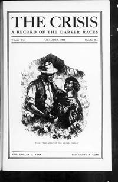
1912
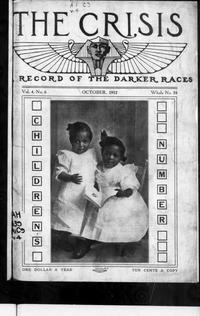
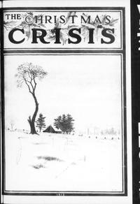
1913
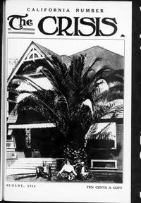
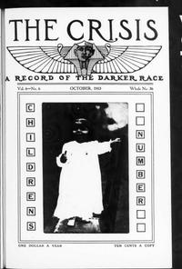
1914
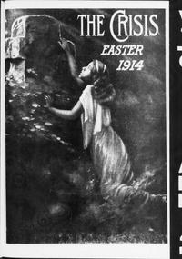
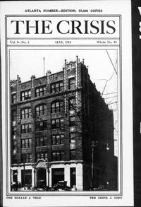
1915
1916
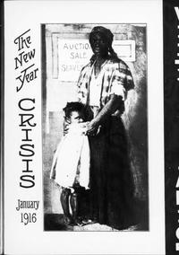
1917
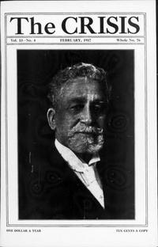
1918
1919
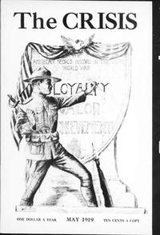
1920s
1920
1921
1922
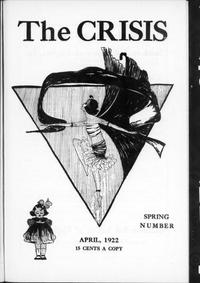
1923
1924
1925
1926
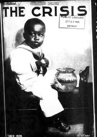
1927
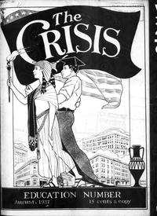
1928
1929
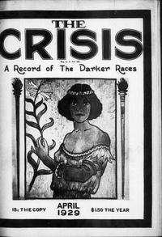
1930s
1930
1931
1932
1933
1934